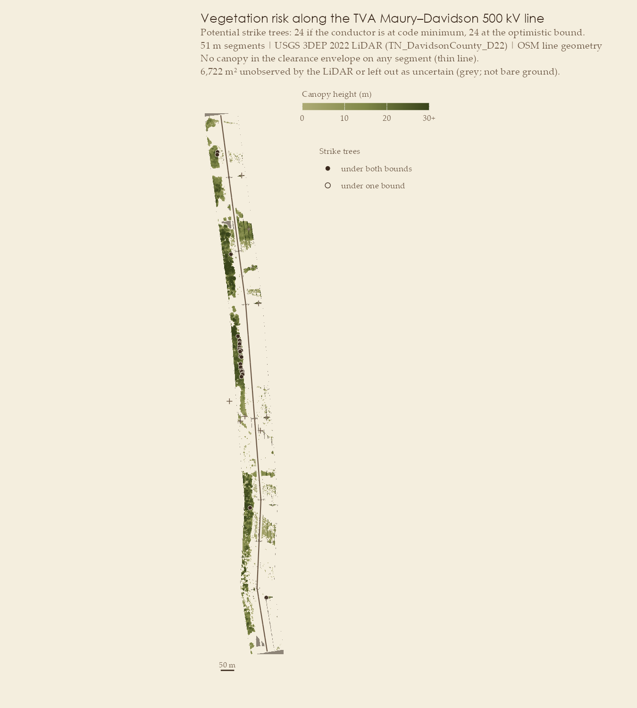
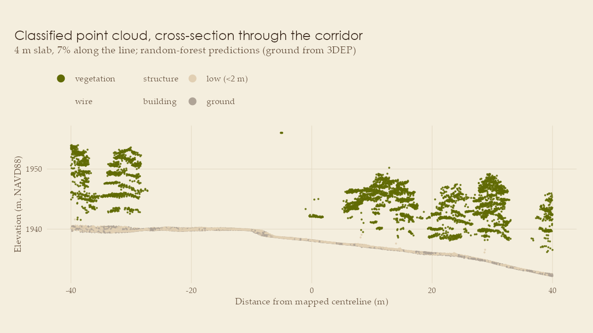
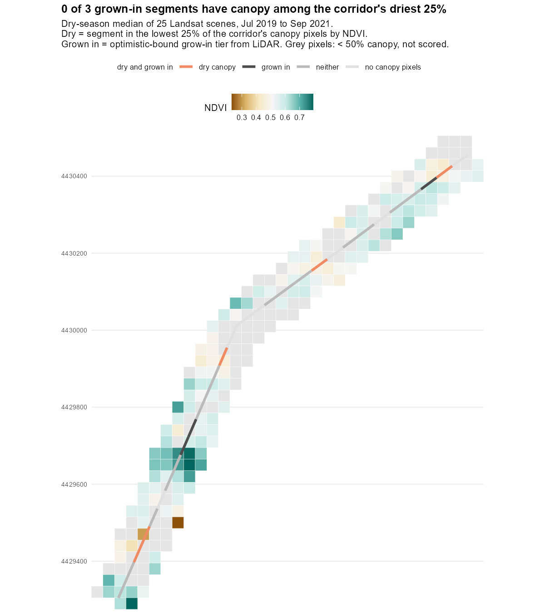
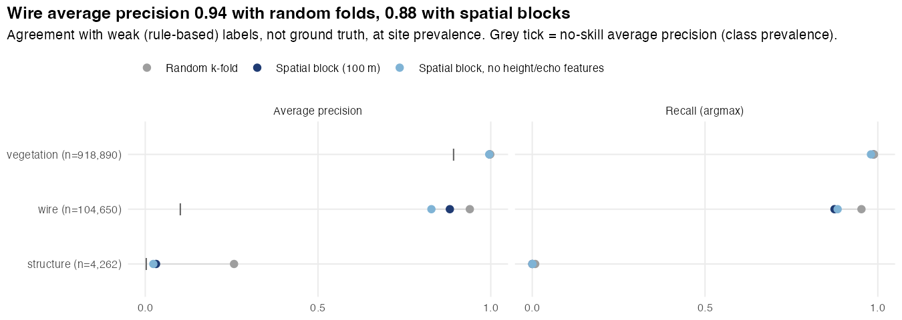
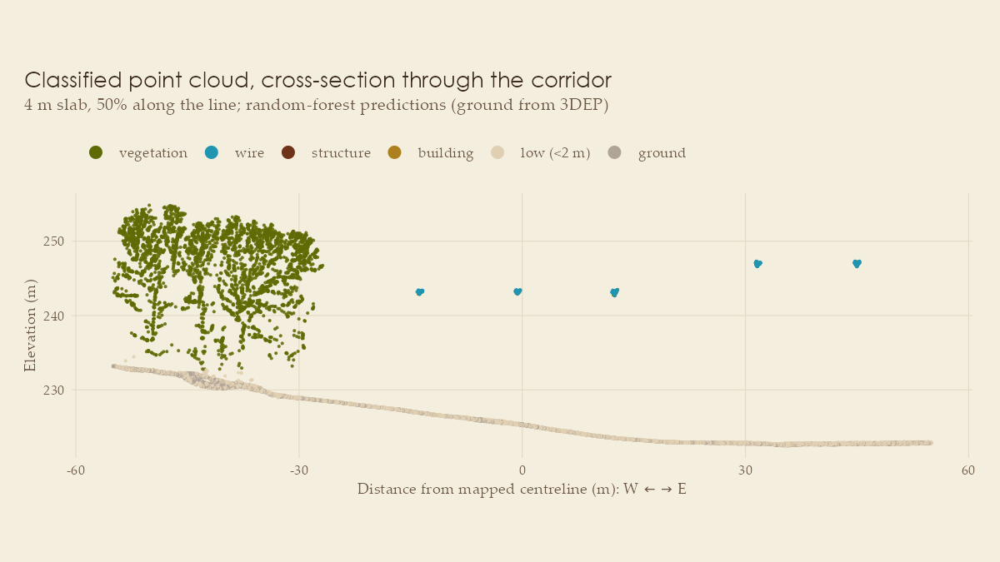

Screening transmission corridors for vegetation risk from public airborne LiDAR, in R.
vegrisk is an R package plus two reproducible case studies. It takes USGS 3DEP point clouds (LAS/LAZ) and OpenStreetMap power-line geometry and produces a segment-by-segment screen for the two vegetation failure modes utilities manage:
- Grow-in: canopy growing up into the clearance envelope beneath the conductors.
- Fall-in: “strike trees” beside the line that are tall enough to reach a conductor if they fall.
| Sunshine Canyon, CO | West Nashville, TN | |
|---|---|---|
| Line | Sunshine–Boulder Hydro 115 kV, wood H-frames | TVA Maury–Davidson 500 kV, lattice towers, shared right-of-way |
| Setting | Wildland–urban interface (2010 Fourmile Canyon Fire burned ~2.5 km away) | Wooded hills, managed right-of-way |
| LiDAR |
CO_DRCOG_2020, UTM metres, ~35 pts/m² |
TN_DavidsonCounty_D22, Tennessee State Plane US survey feet, ~34 pts/m² |
| Delivered classes | ground / unclassified / noise only | + vegetation (3–5) and buildings (6) |
| Line length, above-ground points | 1.52 km, 2.26 M | 2.0 km, 1.05 M |
| Conductor returns found | 914 | 104,650 |
| Conductor elevation measured along | 2% of the line | ~100% of the line |
| Result | Bounded: 3 robust grow-in candidates, 27 segments undecidable | Decisive: no grow-in, 24 strike trees in 7 segments, 32 clear |
Headline findings
- No public 3DEP project from 2019 on labels power lines. I sampled the classification of all 641 USGS 3DEP projects from 2019 onward in the public Entwine index. None uses the ASPRS wire classes; the few hits for codes 13/14 were topobathy datasets or state-specific reuse (NC Phase 4 uses 13 for roads). Conductor labels have to be derived.
- Whether public LiDAR can decide grow-in depends on whether it sampled the conductors. In Colorado it barely did, so the conductor is bounded within a band tens of metres tall and 27 of 30 segments stay undecidable. In Nashville, the 500 kV bundles were sampled along almost the whole line, so the same pipeline gives a measured, decisive screen.
- Vendor vegetation classes contain the conductors. In Nashville, 99.3% of conductor returns (103,918 points, 15–45 m up) are delivered as high vegetation. A canopy model built straight from the delivered classes flags every one of the 39 segments as grow-in; with conductor returns removed, none are.
- Random cross-validation on point clouds misleads. Random folds report a Colorado wire average precision of 0.22; 100 m spatial blocks report 0.004. A model trained in Colorado doesn’t transfer to Nashville (wire recall 0).

Pipeline
3DEP tiles (TNM API) ─┐
├─ clip to corridor ─ height-normalise (TIN on class 2)
OSM lines (Overpass) ─┘ │
▼
per-point features: multi-scale eigenvalue shape (k = 10, 30),
echo structure, intensity percentile, height
│
weak labels from GIS + geometry (3DEP has no wire classes)
│
random forest (ranger), class-weighted, prior-corrected;
spatially blocked CV vs random CV; feature ablation;
vendor-class ground truth where it exists
│
conductor elevation: measured where seen, bounded elsewhere
│
canopy model from consensus vegetation, conductor returns removed
│
per 50 m segment: clearance encroachment + 3D strike trees
under both conductor bounds, with a confidence label| Step | Function | File |
|---|---|---|
| Find / download 3DEP tiles, fetch OSM layers |
tnm_lidar_tiles(), download_tiles(), osm_power_lines(), osm_power_structures(), osm_buildings()
|
R/fetch.R |
| Corridor clip, noise removal, height normalisation, CRS-unit safety |
read_corridor(), line_corridor(), las_m_per_unit()
|
R/preprocess.R |
| Point features | point_features() |
R/features.R |
| Weak labels | weak_labels() |
R/labels.R |
| Classifier and validation |
train_point_classifier(), cv_point_classifier(), classify_probs(), predict_points(), evaluate_vendor_classes()
|
R/classify.R |
| Conductor model and risk |
conductor_profile(), corridor_rasters(), assess_risk()
|
R/risk.R |
| Dry-season canopy greenness and moisture (optional) |
landsat_scenes(), landsat_composite(), canopy_dryness()
|
R/landsat.R |
| Figures |
plot_risk_map(), plot_profile(), plot_cross_section(), plot_cv(), plot_importance(), plot_canopy_dryness()
|
R/plot.R |
| Case studies |
run_case_study(cfg) + one config script per site |
analysis/ |
Design decisions worth reading
Distances are always metres. Point clouds stay in their native CRS, and every parameter is converted with las_m_per_unit(). The Nashville tiles are in US survey feet; without the conversion every buffer would silently shrink 3.28×. Geographic CRSs are rejected.
Labels are weak, and the code says so. Training labels come from:
- building: OSM footprints, shrunk 1 m inward so crowns overhanging eaves don’t count as roof.
- structure: OSM pole and tower nodes.
- wire: an air-gap test (an elevated layer with empty space beneath it across a 3×3 m window) plus an along-line run test in chainage/offset coordinates: each conductor row must extend ≥ 12 m along any mapped line in the area, so second circuits on a shared right-of-way are labelled too. Crown tops are compact and fail.
- vegetation: everything else.
Elevated near-line candidates that fail the wire test abstain (NA) rather than becoming “vegetation”, so missed conductors aren’t taught as trees.
Validation is spatial, and the gap is reported. Folds are 100 m spatial blocks; random folds are reported alongside. Precision is measured at real class prevalence, and the headline metric is average precision against its no-skill value. An ablation drops the features that encode the labelling rule (height, echo structure).
Class weighting is undone at prediction time. The forest trains with inverse-frequency case weights, i.e. under equal priors; classify_probs() multiplies by the true prevalence and renormalises. Without that, the Colorado model called about 25,000 vegetation points “wire”.
Conductor elevation is bounded, not guessed. conductor_profile() uses classified conductor returns where they pass sanity checks: more than one mask radius from a structure (guy wires and crossarms are linear too), a robust low quantile per 5 m bin, above the code minimum, and at a plausible slope to neighbouring bins. Elsewhere it brackets the conductor:
- lower bound: ground + NESC minimum clearance.
- upper bound: the chord between the supports either side, at ground + a maximum attachment height. A conductor sags below the chord between its attachments. Where the next support lies outside the data, the upper bound is reported as unknown.
Every risk metric is computed under both bounds, and each segment is labelled measured, robust (same answer under both bounds) or bound-dependent.
Conductor returns are removed from the canopy model, but trees are not. Conductors that cross canopy aren’t “suspended”, so the rules label them vegetation, and they would put “trees” at wire height under the whole line. corridor_rasters() removes points inside the conductor envelope at or above the measured conductor elevation only if they are wire-like:
- locally linear, or
- suspended: nothing in the 1.5 m layer just beneath the conductor band across a 3×3 m neighbourhood. Bundled 500 kV conductors form ribbons rather than lines, so this second test matters.
A crown that reaches wire height has foliage beneath it and stays, so it is still flagged. The envelope comes from where conductor returns actually are and is capped at the grow-in zone, so tall trees beside the line keep their tops for the fall-in test. Cells emptied by the removal are treated as unobserved, not bare ground.
Fall-in uses 3D geometry and terrain. A tree pivoting at its base sweeps a sphere of radius h. It can strike if the 3D distance from its base to the nearest conductor point (DTM at the tree, modelled conductor elevation, measured outer-phase offset) is ≤ h. Trees inside the grow-in zone count as grow-in, not strike.
Structures are masked. Towers, H-frames and crossarms otherwise look like tall trees under the conductors. Cells within a structure-sized radius of OSM structure nodes and line vertices (for every circuit in the corridor) are treated as unobserved, and features one or two cells wide are removed with a 3×3 crown-support filter.
LiDAR says where canopy has grown in; Landsat says how green and wet it is. The grow-in screen ranks canopy by its distance to the conductor, not by how readily it would carry fire to the line. An optional Landsat step adds that:
- Data: Landsat 8/9 Collection 2 Level-2 surface reflectance, from the Microsoft Planetary Computer STAC API (no key needed). Only the corridor window of each cloud-optimised GeoTIFF is read.
-
Composite: a per-pixel median over every clear dry-season observation in the chosen years.
QA_PIXELmasks fill, cloud, dilated cloud, cirrus, shadow, snow and water. Water is masked because its negative NDVI would read as very dry canopy. Two indices come out: NDVI (greenness) and NDMI (NIR against SWIR1: canopy water content, the closer of the two to fuel moisture). - LiDAR picks the pixels. A 30 m pixel is wider than many rights-of-way, so most pixels mix trees with cleared ground. Each pixel gets a canopy fraction from the 1 m CHM, and pixels under 50% canopy are not scored. A segment’s value is the mean of its pixels, weighted by how many of the segment’s canopy cells inside the grow-in zone fall in each one. It describes the trees under the wires, not the forest beside them.
-
Relative, not absolute. Neither index has a fire-danger threshold. Each segment is ranked against every canopy pixel in the corridor, and
dry_canopymarks the lowest quarter.dry_grow_inis dry and grown in under the optimistic conductor bound;dry_grow_in_louses the pessimistic tier.
Case study 1: Sunshine Canyon, Colorado

The conductor is barely sampled. After the sanity checks, conductor returns survive along 2% of the line, and spans run 257–468 m between H-frames across a 250 m descent into the canyon. Along 22% of the line the next support is outside the data, so there is no upper bound at all.
| optimistic conductor (upper bound) | pessimistic conductor (code minimum) | |
|---|---|---|
| segments with ≥ 5 m² of canopy in the clearance envelope | 3 of 30 | 28 of 30 |
| potential strike trees | 19 | 307 |
- 3 robust grow-in candidates. The top one (about 1.01–1.06 km along the line, conductor measured along 41% of it) has a conductor about 15 m up, leaving a low H-frame on the canyon floor, beside riparian cottonwoods up to 27 m tall. The other two have trees of 20–29 m that exceed even the highest plausible conductor. They are the places to verify with imagery or a field visit first.
- 27 segments are bound-dependent. Whether they need work depends on where the conductor actually is, which this acquisition doesn’t show.
| class | n | prevalence | avg. precision, spatial blocks | random folds | spatial, no height/echo |
|---|---|---|---|---|---|
| building | 3,608 | 0.0016 | 0.36 | 0.85 | 0.51 |
| structure | 1,602 | 0.0007 | 0.012 | 0.41 | 0.011 |
| wire | 914 | 0.0004 | 0.004 | 0.22 | 0.005 |
With only a few hundred metres of labelled conductor and five structures, wires and structures don’t generalise across space here. Random folds would have hidden that.

The grown-in canopy is not the dry canopy. A dry-season (July–September) median of 25 Landsat 8 scenes from 2019–2021, bracketing the 2020 flight, gives 141 canopy-dominated 30 m pixels in the corridor. 23 of the 30 segments have enough grown-in canopy to rank; NDVI and NDMI agree closely across them (r = 0.89).
| robust grow-in candidate | NDVI percentile | NDMI percentile |
|---|---|---|
| 0.10–0.15 km, trees to 20 m | 0.36 | 0.49 |
| 1.01–1.06 km, riparian cottonwoods on the canyon floor (top candidate) | 0.50 | 0.81 |
| 1.06–1.11 km, canyon floor, trees to 29 m | 0.89 | 0.96 |
- None of the 3 robust grow-in candidates is dry. The two worst encroachments are among the wettest canopy on the line: riparian trees on the canyon floor.
- The 5 driest segments (lowest NDVI quarter; 0.05–0.10, 0.46–0.51, 0.81–0.86 and 1.32–1.42 km) are all bound-dependent: grow-in only if the conductor is at the code minimum. If the conductor turns out to be low there, encroachment and dry fuel coincide, so these come first among the 27 undecidable segments.

Case study 2: West Nashville, Tennessee

The conductor is measured along the whole line. The 500 kV bundles were well sampled: 104,650 conductor returns, three phases at about −12, 0 and +12 m, and a second circuit sharing the right-of-way at +30–45 m. The profile shows clean catenaries between towers, about 15–45 m above the ground (median 24 m).
Classifier against weak labels (spatial blocks):
| class | n | prevalence | avg. precision, spatial blocks | random folds | spatial, no height/echo |
|---|---|---|---|---|---|
| wire | 104,650 | 0.10 | 0.88 | 0.94 | 0.83 |
| structure | 4,262 | 0.004 | 0.03 | 0.26 | 0.02 |

Wires transfer across space here: average precision 0.88 against a no-skill 0.10, and 0.83 even without the height and echo features that encode the labelling rule. Structures (31 lattice towers) still don’t.
Against the vendor’s classes. These are independent of the weak labels. A geometric conductor zone (inside the measured conductor envelope, within 3 m of the conductor or above) is excluded from scoring for every method alike, because the vendor put conductors in vegetation. Vegetation is 98.5% of the scored points, so its F1 can’t show skill: predicting “vegetation” everywhere scores 0.993.
| vegetation F1 | building F1 | balanced accuracy | Cohen’s κ | |
|---|---|---|---|---|
| always “vegetation” (baseline) | 0.993 | 0 | 0.50 | 0 |
| weak labels | 0.948 | 0 | 0.46 | −0.01 |
| model trained on weak labels | 0.955 | 0 | 0.46 | −0.01 |
| Colorado model, transferred | 0.993 | 0 | 0.50 | 0.00 |
| trained on vendor labels (spatial CV) | 0.998 | 0.87 (AP 0.95) | 0.89 | — |
- On vegetation vs building, the weak-label pipeline has no skill at this site. OSM maps one building in the corridor, so there are no building labels to learn from. The vendor’s labels would buy a building F1 of 0.87. The weak models’ lower vegetation recall is mostly second-circuit conductors and abstentions, which the vendor also calls vegetation.
- The Colorado model doesn’t transfer. With its own class prior it recalls 0% of Nashville’s conductor returns. Threshold-free, its wire average precision is 0.22 against a 0.10 baseline (the Nashville model: 0.87). Its 0.993 vegetation F1 is exactly the baseline.
Risk screen. The same segments, with three different canopy models:
| canopy model | grow-in | fall-in | clear |
|---|---|---|---|
| vendor vegetation classes, as delivered | 39 | 0 | 0 |
| vendor vegetation + this package’s conductor removal | 0 | 10 | 29 |
| this package (consensus vegetation + conductor removal) | 0 | 7 | 32 |
- The delivered classes would send crews to every span. Removing conductor returns is the whole grow-in correction (39 → 0). Consensus labelling (model and weak rules agreeing on vegetation, vendor buildings removed) then trims fall-in from 10 segments to 7.
- No grow-in. The managed right-of-way is clear under the conductors.
- 24 strike trees across 7 segments, 28–39 m from the centreline, the same under both bounds because the conductor is measured. They are the list to verify.
- The conductor envelope has to cover every phase. An earlier run capped it at 15 m while one outer phase sits up to ~19 m from the OSM centreline. That left outer-phase returns in the canopy model, which showed up as 2 grow-in segments and 4 extra strike trees at the envelope edge. Widening the grow-in zone to 21 m removed all of them.

Limitations
- Weak labels. Wire and structure accuracy is agreement with the labelling rules. Nashville’s vendor classes give real ground truth for vegetation and buildings only, and they themselves misclassify conductors. A hand-labelled test set (e.g. in CloudCompare) is the next step.
- Bounds rest on assumptions. Attachment heights are capped (20 m for the H-frames, 45 m for the lattice towers), and every support is assumed to be an OSM vertex or tagged node. A taller or unmapped structure would invalidate the upper bound locally.
- Conductor removal is a judgement. Canopy within ~1.5 m beneath a conductor can’t be told apart from a conductor over dense canopy; both are kept as canopy and flagged as grow-in, which is the conservative choice.
- Second circuits are labelled and their towers masked, but only the study line gets a conductor profile; second-circuit returns over canopy can remain in the canopy model beyond the study line’s envelope.
- OSM geometry is volunteer-digitised. Conductor envelopes are sized from where returns actually are, not from the centreline alone.
- The structure mask hides canopy close to each support, so strike trees right beside structures are not scored.
- Treetops from a CHM (local maxima, 5 m window) merge or split crowns in dense stands.
- Vertical units are assumed to match horizontal units (true for both deliveries: metres/metres and US survey feet/US survey feet).
-
Landsat greenness is not fuel moisture. Low NDVI over canopy can also mean thin, trimmed or leaf-off crowns, and a 30 m pixel always mixes the right-of-way with its edges.
dry_canopyranks segments within one corridor and one composite. It can’t be compared across sites or seasons, and it is not a fire-danger rating.
Reproduce
# R >= 4.3
install.packages(c("lidR", "sf", "terra", "lwgeom", "ranger", "FNN", "data.table",
"httr2", "units", "withr", "ggplot2", "scales", "devtools"))Rscript analysis/run_sunshine_canyon.R # ~0.6 GB of 3DEP LiDAR on first run
Rscript analysis/run_nashville.R # ~0.3 GB; uses the Colorado model for the transfer test
Rscript -e 'devtools::test()' # unit tests: synthetic geometry + lidR example data, no networkCross-validation is the slow part (minutes on mains power, much longer on battery). Set VEGRISK_REUSE=1 to reuse a site’s saved model and validation results and recompute only labels and risk. The OSM layers used are cached in data-raw/<site>/*.geojson, so reruns are reproducible even if OSM changes. Outputs go to output/<site>/: segments.gpkg, trees.gpkg, segments.csv, conductor_profile.csv, cv_metrics.csv, summary.rds. A site config with landsat = list(years, months) also writes landsat_composite.tif and landsat_scenes.csv; the composite is cached and reused on reruns.
Data
-
LiDAR: U.S. Geological Survey 3D Elevation Program, public domain:
CO_DRCOG_2020_B20tilesw0472n4429,w0472n4430;TN_DavidsonCounty_D22tiles155020,155060,155100,155140,169020. - Power lines, structures, buildings: © OpenStreetMap contributors, ODbL.
- Landsat: U.S. Geological Survey Landsat 8–9 Collection 2 Level-2 surface reflectance, public domain, accessed through the Microsoft Planetary Computer.